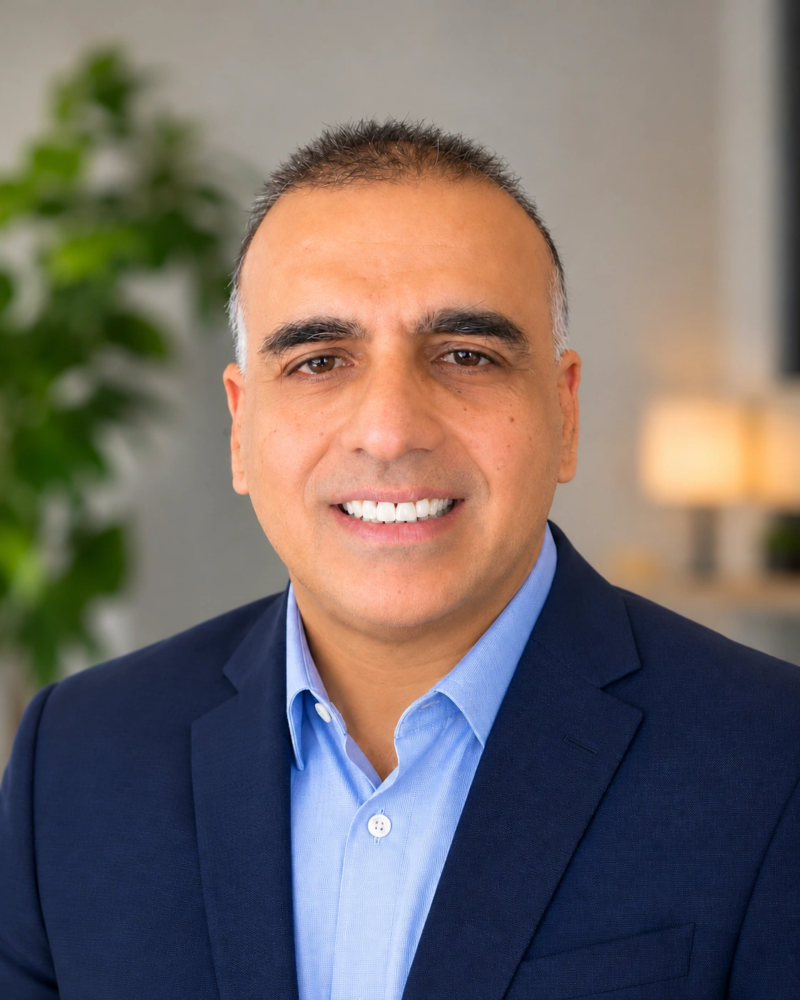

Faiz Syed
Founder & Chief Executive Officer
Faiz Syed founded AlSakeena to help people living with mental illness find the care, support, and opportunities they need to regain stability and live with dignity. His own experience with mental illness and recovery shaped the organization’s mission and its commitment to listening to the people it serves.
Faiz brings more than 25 years of experience building and leading global technology organizations and guiding large-scale transformations. His work with teams at Comerica Bank and Ford Motor Company has focused on setting priorities, improving how teams work together, and measuring whether changes deliver the intended results.
As Founder and Chief Executive Officer, Faiz guides AlSakeena’s strategy and program development. He focuses on connecting people with legal advocacy, access to treatment, community support, and pathways to meaningful work.
For Faiz, economic dignity means having choices about how to support yourself and what comes next. A mental illness can interrupt someone’s education or career, and returning to work can take time. That belief shapes AlSakeena’s approach to economic opportunity, with an emphasis on helping people explore training and employment at a pace that supports their recovery.